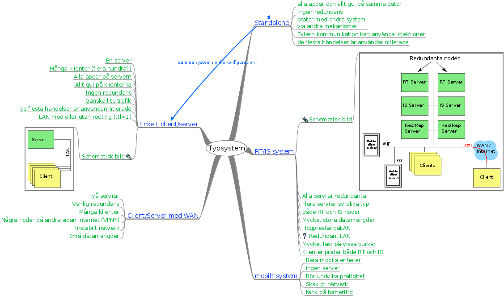

Typsystem

Typsystem
Standalone
alla appar och allt gui på samma dator
ingen redundans
pratar med andra system
via andra mekanismer
Extern kommunikation kan använda injektioner
de flesta händelser är användarinitierade
Enkelt client/server
En server
Många klienter (flera hundra?)
Alla appar på servern
Allt gui på klienterna
Ingen redundans
Ganska lite trafik
de flesta händelser är användarinitierade
LAN med eller utan routing (ttl>1)
Schematisk bild
RT/IS system
Schematisk bild
Alla servrar redundanta
Flera servrar av olika typ
Både RT och IS noder
Mycket stora datamängder
HögprestandaLAN
Redundant LAN
Mycket last på vissa burkar
Klienter pratar både RT och IS
Client/Server med WAN
Två servrar
Vanlig redundans
Många klienter
Några noder på andra sidan internet (VPN?)
Instabilt nätverk
Små datamängder
mobilt system
Bara mobila enheter
ingen server
Bör undvika pratighet
Skakigt nätverk
tänk på batteritid